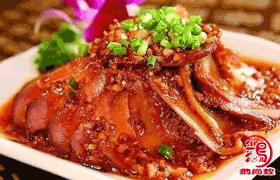

卤水培训
古往今来,人们对卤水菜色泽美观．香鲜醇厚,软熟滋润,赞不绝口。卤水是中国粤菜及闽菜常用的调味料，为一种以多种香料煮成的酱油。卤水是中国粤菜、川菜以及许多小吃中常用的一种调味料，很多餐馆会将卤水重复使用，因为他们认为，卤水煮得越久，便越美味。鹅尚煌卤水做法培训课程将会从卤水汁做法，卤水汁配方，配料等基础教起，更有地域特色的潮州卤水、广式卤水、川式卤水、卤水拼盘、卤水豆腐等卤水做法培训，深挖各地域的卤水汁做法，不同的卤水汁配料，和卤水汁配方。

潮州卤水
潮州卤水是潮州菜的重要组成，广东潮州的汉族特色名菜之一。卤水所用材料有花椒、陈皮、桂皮、甘草、沙姜、葱、生抽、老抽及冰糖等多种，熬制数小时即可制成。然后将需要卤制的产品等放入其中，加热卤制，形成各种卤味。鹅尚煌卤水做法培训还加入中草药特色的卤水汁配方，让卤水汁更加甘醇，健康。从卤水汁的配料，配方，到卤水汁的熬制，让你学会潮州卤水的全套制做法。